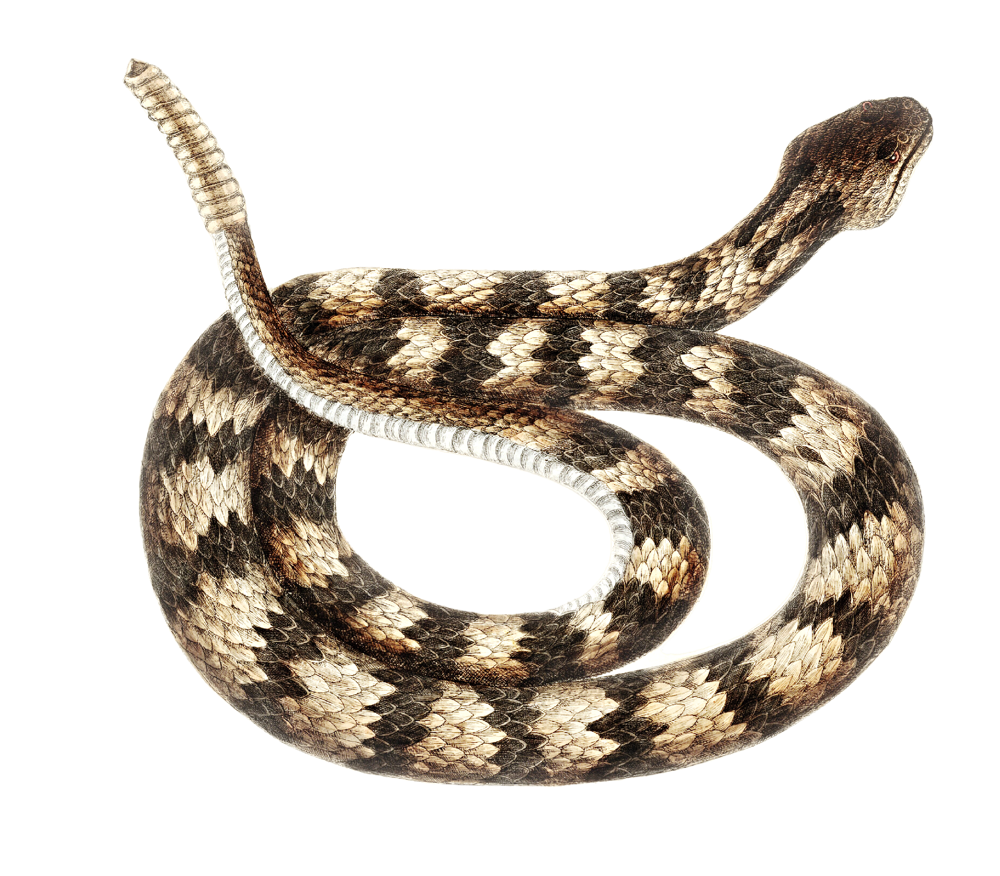

Vibora de cascabel
Nombre
Víbora de cascabel o cascabel de montaña
Nombre cientifico

La víbora de cascabel habita en diversas regiones de América, desde desiertos y zonas áridas hasta bosques y pastizales. Es un animal principalmente terrestre que suele esconderse entre rocas, arbustos o madrigueras. Es más activa durante la noche o al atardecer, especialmente en climas cálidos. Caza pequeños mamíferos, aves y reptiles, a los que detecta gracias a su capacidad para percibir el calor. Prefiere evitar a los humanos y utiliza su cascabel como advertencia antes de atacar.
Caracteristicas: